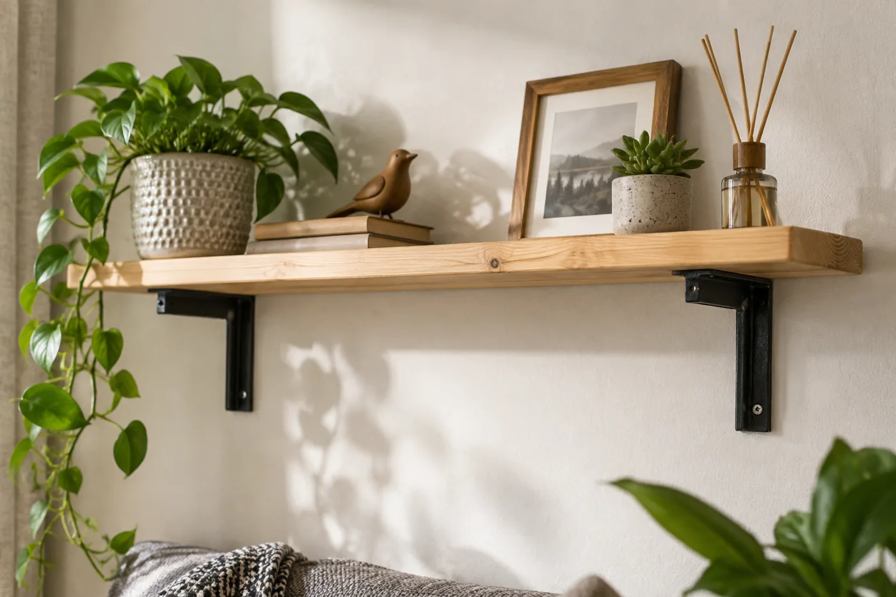
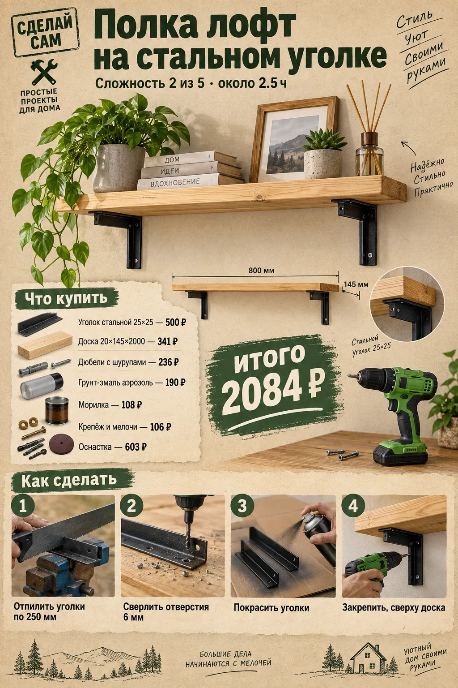
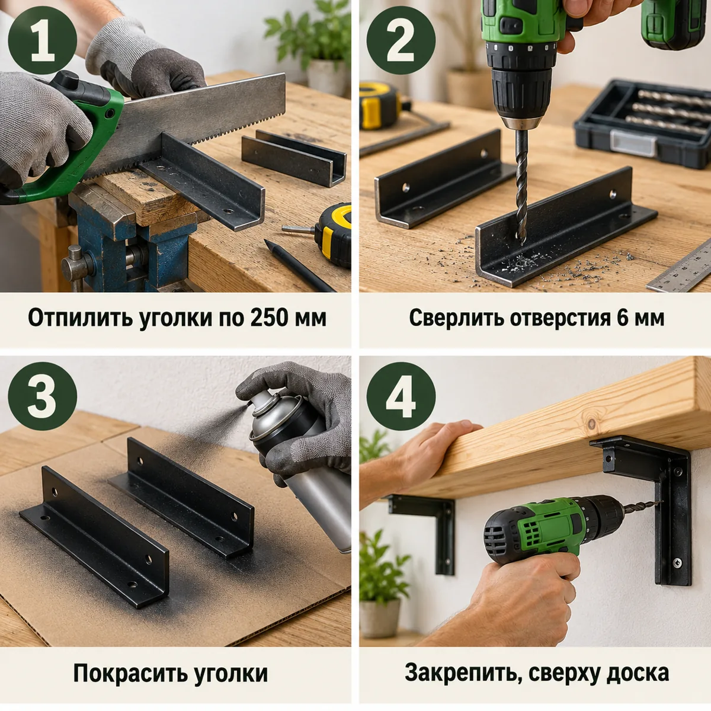
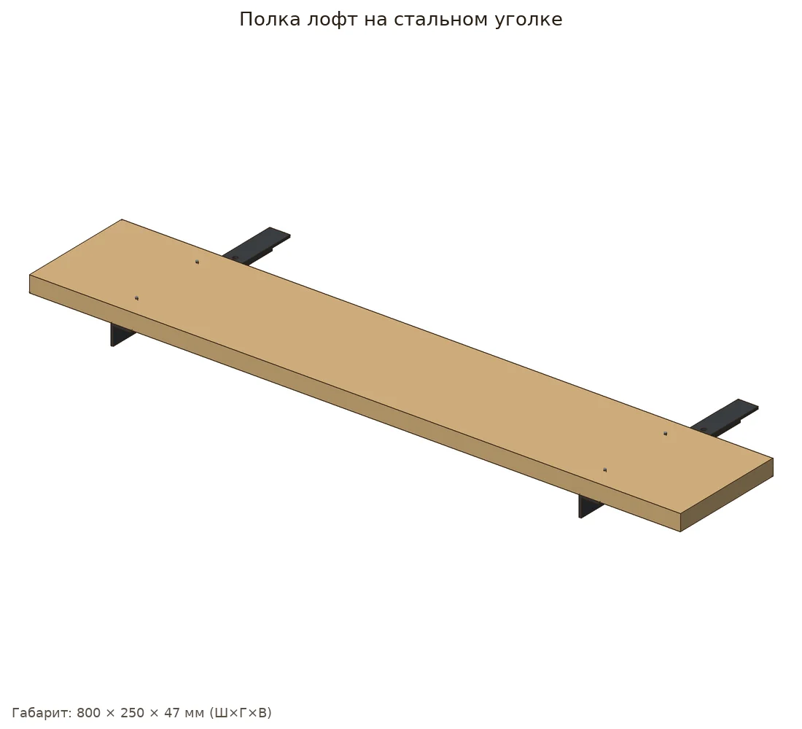
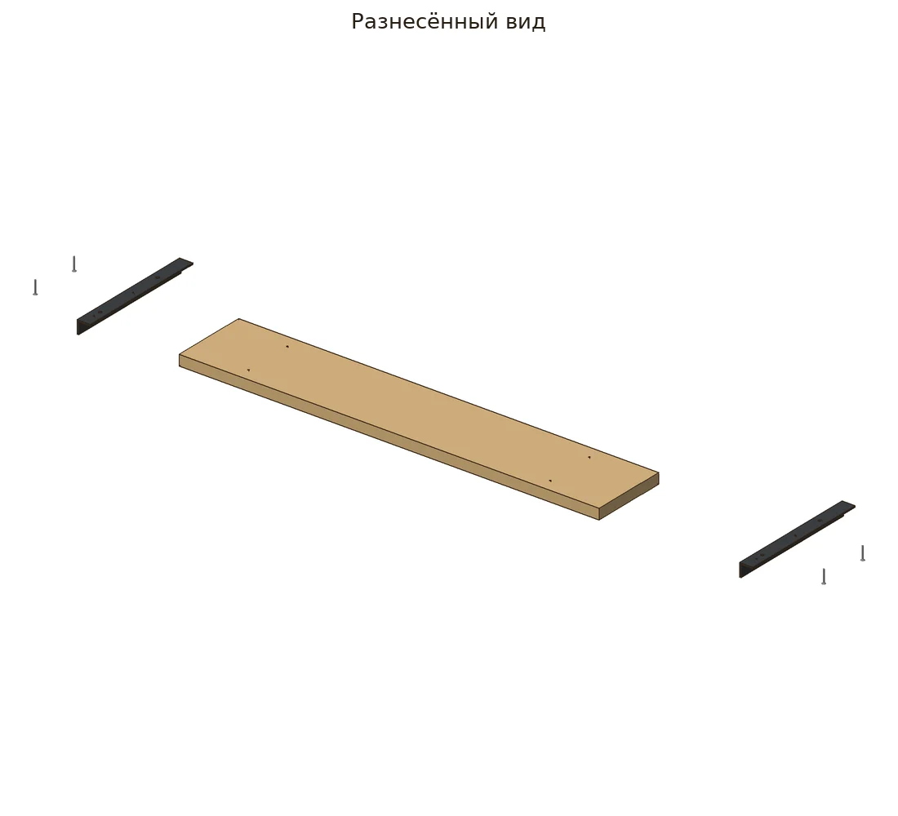
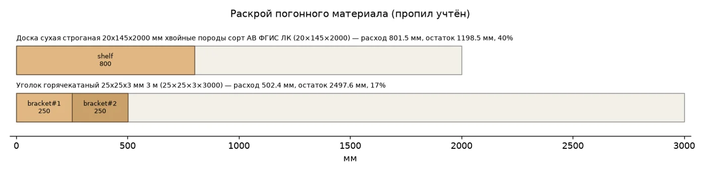
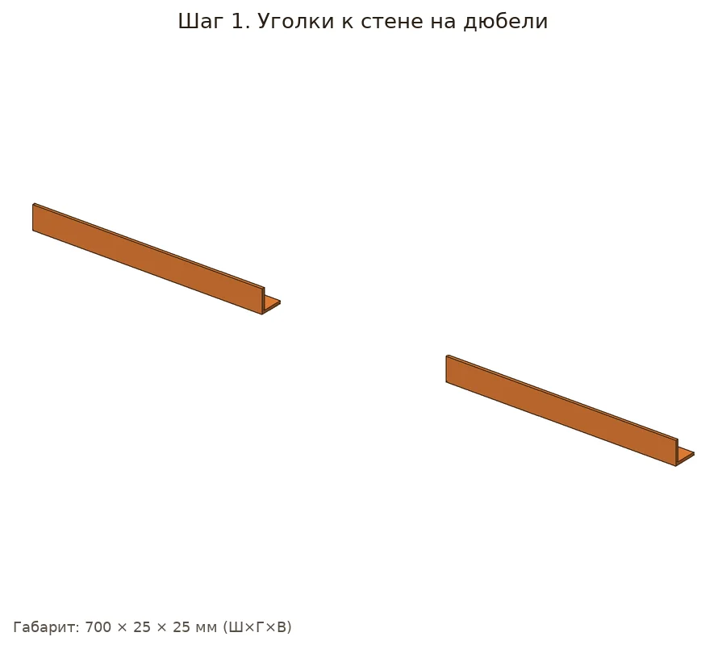
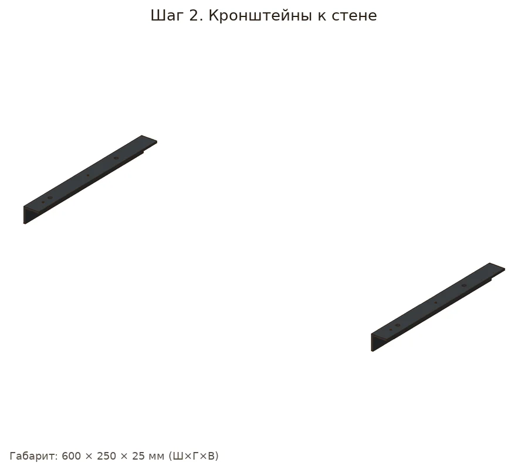
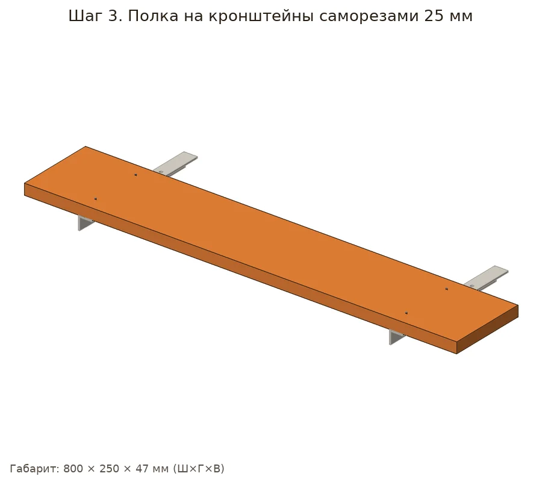

Доска на двух кронштейнах из горячекатаного уголка 25×25: уголок пилится ножовкой, отверстия — шуруповёртом на малых оборотах.


| Позиция | Зачем | Кол-во | Цена | Сумма |
|---|---|---|---|---|
| материал | ||||
| Уголок стальной 25×25 Уголок горячекатаный 25х25х3 мм 3 м · арт. 612294 |
уголок 25×25×3, 3 м | 1 шт | 500 ₽ | 500 ₽ |
| Доска 20×145×2000 Доска сухая строганая 20х145х2000 мм хвойные породы сорт АВ ФГИС ЛК · арт. 102355 |
доска 20×145×2000 | 1 шт | 341 ₽ | 341 ₽ |
| крепёж | ||||
| Дюбели с шурупами Дюбель универсальный Hard-Fix 6x30 мм нейлон с шурупом (40 шт.) · арт. 687547 |
дюбели с шурупами | 1 упак | 236 ₽ | 236 ₽ |
| Саморезы 25 мм Саморезы ГД 25x3,5 мм (30 шт.) · арт. 125767 |
саморезы 25 мм | 1 упак | 34 ₽ | 34 ₽ |
| отделка | ||||
| Грунт-эмаль аэрозоль Грунт-эмаль аэрозольная по ржавчине Престиж серая матовая RAL 7040 425 мл (01-106-720-004) · арт. 1098184 |
грунт-эмаль | 1 шт | 190 ₽ | 190 ₽ |
| Морилка Морилка MasterGood водная антисептическая дуб 0,5 л · арт. 682718 |
морилка | 1 шт | 108 ₽ | 108 ₽ |
| расходник | ||||
| Карандаш Карандаш строительный малярный Hesler (2 шт.) · арт. 125418 |
карандаш/разметка | 1 упак | 30 ₽ | 30 ₽ |
| Шкурка P80 Наждачная бумага Flexione 230х280 мм Р80 влагостойкая · арт. 691896 |
шкурка | 1 шт | 42 ₽ | 42 ₽ |
| оснастка | ||||
| Бита PH2 Бита Hesler PH2 магнитная 25 мм (882083) · арт. 882083 |
бита PH2 | 1 шт | 33 ₽ | 33 ₽ |
| Сверло по металлу 6 Сверло по металлу спиральное КМ 6х93 мм (966054) · арт. 966054 |
сверло по металлу 6 мм (на малых оборотах, 1-я скорость) | 1 шт | 136 ₽ | 136 ₽ |
| Ножовка по металлу Ножовка по металлу Hesler 300 мм 24 зуб/дюйм средний зуб · арт. 681539 |
ножовка по металлу | 1 шт | 222 ₽ | 222 ₽ |
| Рулетка Рулетка с фиксатором 3 м x 16 мм · арт. 159373 |
рулетка | 1 шт | 99 ₽ | 99 ₽ |
| Очки защитные Очки защитные Исток открытые с прозрачными линзами (ОЧК016) · арт. 685157 |
очки: стружка металла | 1 шт | 113 ₽ | 113 ₽ |
| Итого, включая оснастку 603 ₽ | 2084 ₽ | |||
Источник идеи: http://craftthyme.com/industrial-pipe-and-wood-bookshelves/. Проект переработан под шуруповёрт 12 В и ручной инструмент.
Параметрическая 3D-модель с настоящими отверстиями, крепёж расставлен по правилам (Eurocode 5, упрощённо для DIY), раскрой с учётом пропила, закупка упаковками. Габарит модели 800×250×45 мм, масса ≈1.71 кг. Прочность не рассчитывалась.






| Соединение | Крепёж | Шт. | Заход | Пилот |
|---|---|---|---|---|
| shelf_br1 | 3.5×25 | 2 | 22 мм | ⌀2.5 |
| shelf_br2 | 3.5×25 | 2 | 22 мм | ⌀2.5 |
Доска 20х145: 801.5 мм
Уголок 25х25х3: 502.4 мм
Саморез 3.5×25: 4 шт
Дюбель 6x30 с шурупом: 4 шт
Шкурка P120: ≈0.77 лист
Морилка: ≈0.03 л
Эмаль-аэрозоль: ≈0.03 л